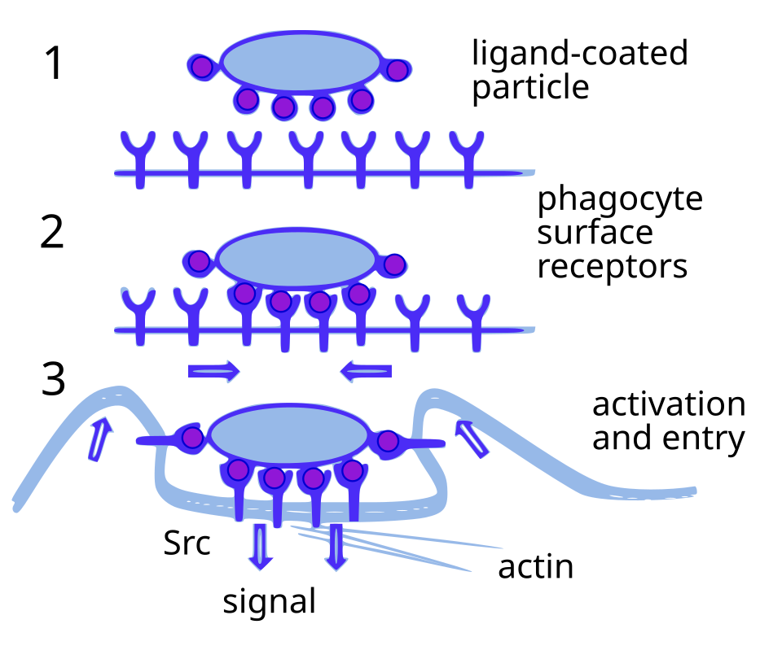
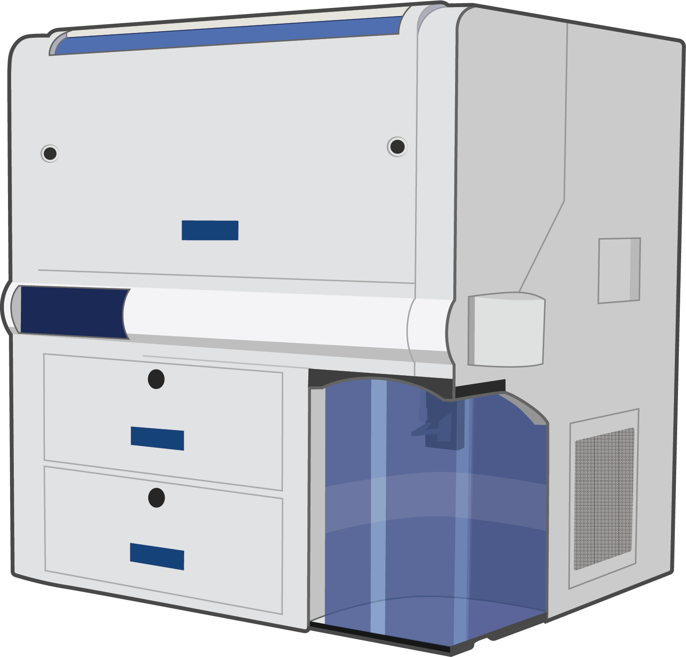

Executive Summary
AI 에이전트가 가설을 세우고, 실험을 설계하고, 결과를 해석하는 과정을 처음으로 자율적으로 완주했다. FutureHouse가 만든 다중 에이전트 시스템 Robin은 치료 옵션이 거의 없는 실명 질환인 건성 황반변성(dAMD)을 입력으로 받아, 문헌을 읽고 후보 화합물을 추려 녹내장 약 리파수딜(Ripasudil)을 새 적응증 후보로 지목했다. 사람 과학자가 한 일은 시험관 실험뿐이었다. 이 결과는 2026년 Nature에 실렸다.
그런데 같은 논문 안에 더 흥미로운 숫자가 있다. AI 분석 모듈이 리파수딜의 식작용 효과를 대조군의 7.5배로 보고했는데, 사람이 같은 데이터를 다시 분석하니 1.75배였다. 4배 넘는 차이다. AI가 가설을 빠르게 쏟아낼수록, 그 결과를 사람이 다시 들여다봐야 할 부담도 같이 커진다는 신호다.
Robin이 신약 후보를 자율로 골라낸 과정과, 그 과정이 데이터 품질과 검증에 남긴 질문은 떼어 놓을 수 없다. 자동화의 속도가 빨라질수록 사람이 검증해야 할 데이터도 같은 속도로 늘어난다. 속도의 역설이 이 사례가 남긴 진짜 교훈이다.
500편 / 30분
문헌 검토 속도
Robin이 입력 한 문구로 읽고 합성한 논문 양
200배
연구 시간 단축
기존 워크플로 대비 FutureHouse 추산
7.5 → 1.75배
AI 분석 vs 사람 재분석
식작용 효과 해석의 4배 괴리
0% → 45%
환각 참조 비율
검색 에이전트를 o4-mini로 교체했을 때
세 에이전트가 연구를 분담하다
Robin은 단일 모델이 아니라 역할이 다른 세 에이전트를 묶은 시스템이다. Crow와 Falcon은 문헌을 검색하고 가설을 세우며 실험을 설계한다. Finch는 RNA 시퀀싱이나 유세포분석 같은 생물학 데이터를 받아 분석하고 해석한다. 논문에 실린 가설, 실험 계획, 데이터 분석, 도표는 모두 이 세 에이전트가 생성했다. 사람 과학자가 맡은 부분은 피펫을 잡고 세포를 배양하는 물리적 실험, 즉 손이 필요한 일뿐이었다.
연구는 한 문장에서 시작했다. "건성 황반변성(dry age-related macular degeneration)"이라는 주제어 하나를 받은 Robin은 30분 만에 500편 넘는 논문을 읽고 합성했다. 거기서 망막색소상피(RPE) 세포의 식작용을 강화하는 것을 치료 전략으로 잡고, 그 효과를 측정할 유세포분석 어세이를 직접 설계했다. 이어 30개 화합물을 스크리닝 목록으로 추렸고, 실험 결과가 나오면 다시 해석해 다음 가설을 세우는 사이클을 돌렸다.

주목할 점은 사람이 빠진 자리가 정확히 어디냐는 것이다. 가설 생성, 실험 설계, 결과 해석이라는 연구의 '지적인' 부분 전체를 AI가 맡았다. FutureHouse는 기획부터 논문 제출까지 2.5개월이 걸렸고, 기존 연구 방식과 비교하면 연구자 시간이 약 200배 단축됐다고 추산한다. 이 결과는 2026년 Nature에 게재됐으며, FutureHouse가 같은 시점에 공식 발표로 공개했다.
30개 후보에서 리파수딜로
건성 황반변성은 선진국에서 비가역적 실명의 주요 원인이다. 미국에서만 150만 명이 시력 위협 상태에 있고 60만 명이 법적 실명 상태이며, 2050년까지 환자가 세 배로 늘 것으로 예상된다. 그런데 효과적인 치료 옵션은 거의 없다. 망막 세포가 노폐물을 제대로 처리하지 못해 쌓이는 것이 병의 한 축인데, Robin은 이 노폐물 처리, 즉 RPE 세포의 식작용을 끌어올리는 쪽으로 전략을 잡았다.

30개 후보를 좁혀 Robin이 최종적으로 지목한 약물은 리파수딜(Ripasudil)이었다. 리파수딜은 Rho 인산화효소(ROCK)를 억제하는 약으로, 일본에서 이미 녹내장 치료제로 승인돼 쓰이고 있다. 건성 황반변성 후보로 제안된 것은 이번이 처음이다. 이미 안전성이 검증돼 시판 중인 약을 새 적응증에 연결하는 접근(약물 재창출)이라, 곧바로 후속 실험으로 넘어가기에도 유리하다.
리파수딜 외에도 Robin은 생체 시계를 조절하는 화합물 KL001이 식작용을 강화한다는 점을 확인했고, 지질을 세포 밖으로 내보내는 펌프인 ABCA1이 약 3배 상향 조절되는 분자 메커니즘도 짚어냈다. 후보 하나를 던진 데서 그치지 않고, 그 후보가 왜 듣는지에 대한 작용 경로까지 제시한 셈이다. AI가 "무엇을 시험해 보라"를 넘어 "왜 그런가"의 가설까지 만들어 낸 것이 이 연구가 화제가 된 이유다.
7.5배가 1.75배로 떨어진 자리
화제의 이면에는 같은 논문이 솔직하게 적어 둔 한계가 있다. 데이터 분석을 맡은 Finch는 리파수딜이 대조군(DMSO) 대비 식작용을 7.5배 끌어올렸다고 보고했다. 그런데 사람 과학자가 동일한 유세포분석 데이터를 다시 분석하자 그 수치는 1.75배로 내려갔다. 논문은 이 차이를 분석 방법론의 차이로 설명하지만, 4배가 넘는 격차는 후보를 우선순위에 올릴지 말지를 가르는 크기다.
괴리가 어디서 생겼는지 들여다보면 데이터 전문가에게 익숙한 장면이 나온다. 유세포분석 결과를 배수라는 숫자로 바꾸려면, 먼저 어떤 세포를 "식작용을 했다"고 셀지 그 기준선부터 정해야 한다. 같은 원자료라도 이 기준을 조금만 다르게 잡으면 배수는 크게 흔들린다. AI와 사람이 7.5배와 1.75배로 갈린 자리가 바로 여기다. 데이터를 수치로 옮기는 규칙을 누가 어떻게 정하느냐가 결론의 크기를 좌우한 것이다.

방향이 같았다는 점은 의미가 있다. AI도 사람도 "리파수딜이 효과가 있다"는 결론에는 도달했다. 그러나 효과의 크기는 누가 분석하느냐에 따라 4배 넘게 벌어졌다. 신약 개발에서 효과 크기는 다음 실험에 자원을 얼마나 투입할지를 결정하는 숫자다. 그 숫자가 흔들린다면, AI 분석을 그대로 받아들일 수 없다는 뜻이 된다.
에이전트 자체의 품질이 결과를 어떻게 좌우하는지도 드러났다. 연구팀이 문헌 검색 에이전트 Crow를 OpenAI o4-mini로 바꿔 보자, 원본에서 0%였던 환각 참조(실재하지 않는 인용)가 45%까지 치솟았다. 가설의 근거가 되는 문헌의 절반 가까이가 지어낸 것일 수 있다는 의미다. 어떤 모델을 쓰느냐가 곧 데이터의 신뢰도를 결정했다.
The Conversation의 분석은 이 한계를 더 일반화한다. Finch는 통계와 생물정보학 과제에서 성능이 떨어졌고, "언어로 표현되는 지식"은 잘 탐색하지만 자연의 실제 메커니즘 앞에서는 한계를 보였다. 언어는 모호하고 느슨한데, 과학은 정확해야 한다는 간극이다. AI가 문헌을 빠르게 읽어 그럴듯한 가설을 만드는 것과, 그 가설이 실제로 옳은지는 다른 문제다.
속도가 곧 검증 부담이다
여기서 데이터 전문가에게 익숙한 역설이 나온다. Robin은 일주일이면 수십 개의 가설을 만들어 낼 수 있다. 하지만 그 가설을 시험관에서 실제로 검증할 수 있는 속도는 그만큼 빨라지지 않는다. AI가 생산하는 가설의 양과, 사람이 검증할 수 있는 양 사이의 간격이 벌어질수록, 병목은 가설 생성이 아니라 검증으로 옮겨 간다.
7.5배와 1.75배의 괴리, 0%에서 45%로 뛴 환각 참조는 모두 같은 곳을 가리킨다. 병목은 결국 데이터의 질과 실험의 그라운딩이다. 환각 없는 문헌 분석, 정확한 수치 해석, 재현 가능한 실험 설계가 받쳐 주지 않으면, 아무리 많은 가설도 검증 단계에서 막힌다. "AI 과학자"가 빨라질수록 그 출력을 걸러 줄 검증 인프라와 데이터 품질이 더 중요해진다.
이 구도는 신약 개발에만 해당하지 않는다. AI 에이전트가 분석 결과나 의사결정 근거를 자동으로 쏟아내는 모든 파이프라인에서 같은 일이 일어난다. 출력이 빨라지는 만큼, 그 출력이 사실에 발을 붙이고 있는지 확인하는 일이 비례해서 무거워진다. 자동화가 사람의 일을 줄여 줄 것이라는 기대와 달리, 실제로는 검증이라는 새로운 일을 만들어 낸다.
그래서 Robin이 증명한 것은 두 가지다. AI 에이전트가 과학 연구의 지적 과정을 자율적으로 완주할 수 있다는 가능성, 그리고 그 결과를 신뢰하려면 사람의 검증이 여전히 필수라는 사실이다. 마지막 판단은 사람 몫으로 남았고, 자동화가 빨라질수록 그 몫은 줄지 않고 오히려 늘어난다.
읽어주셔서 감사합니다. AI 자동화와 데이터 검증에 대한 의견이나 질문이 있으시면 언제든 공유해 주세요.
(주)페블러스 데이터 커뮤니케이션팀
2026년 6월 20일
참고문헌
- 1.Ghareeb, A.E., Chang, B., Mitchener, L. et al. (2026). "A multi-agent system for automating scientific discovery." Nature. doi.org/10.1038/s41586-026-10652-y
- 2.FutureHouse (2026). "Demonstrating end-to-end scientific discovery with Robin, a multi-agent system." futurehouse.org
- 3.The Conversation (2026). "New AI scientists are improving but reveal their fundamental limits." theconversation.com